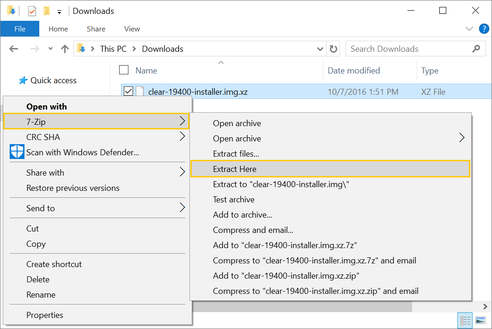
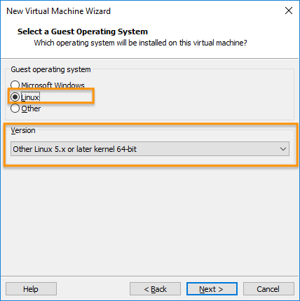
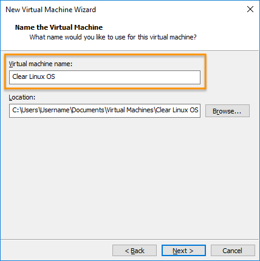
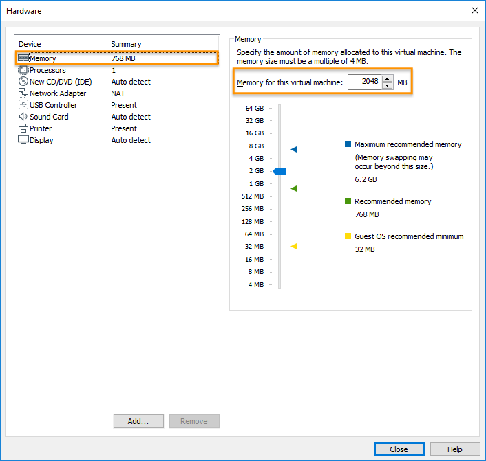
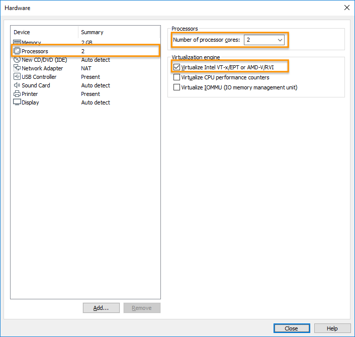
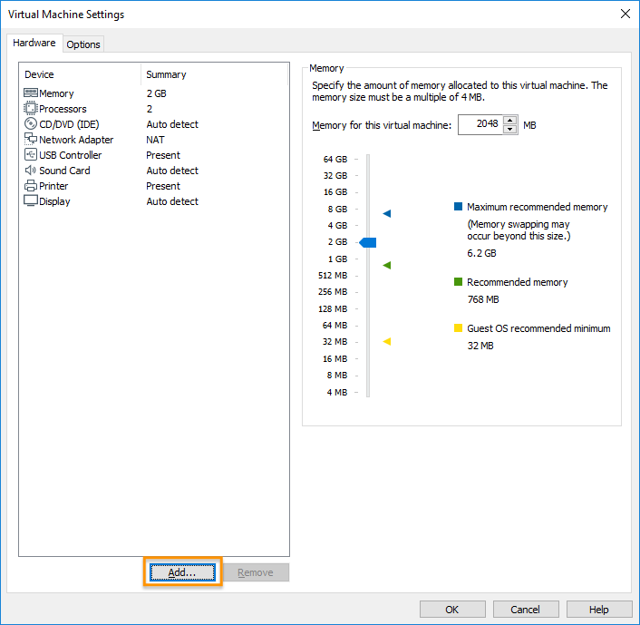

Install Clear Linux* OS as a VMware* Workstation Player guest OS
VMware Workstation 14 Player is a type 2 hypervisor. It runs on top of another operating system such as Windows* or Linux*. With VMware ESXi, you can create, configure, manage, and run Clear Linux* OS VMs on your local system.
This section shows how to create a new VM and install Clear Linux OS into it with the VMware Workstation 14 Player hypervisor. Installing Clear Linux OS into a new VM provides you flexibility when configuring the VM. You can configure the VM’s size, number of partitions, installed bundles, etc.
In this tutorial, we perform the following steps:
- Install the VMware Workstation Player hypervisor
- Download the latest Clear Linux OS installer ISO
- Verify the integrity of the Clear Linux OS image
- Decompress the Clear Linux OS image
- Create and configure a new VM
- Install Clear Linux OS into the new VM
- Detach the Clear Linux OS installer ISO from the VM
- Enable UEFI boot support
- Power on the VM
- Related topics
If you prefer to use a pre-configured Clear Linux OS VMware image instead, see our Run pre-configured Clear Linux* OS image as a VMware* Workstation Player guest OS guide.
VMware offers a type 1 hypervisor called VMware ESXi designed for the cloud environment. For information on how to install Clear Linux OS as guest OS on it, see Install Clear Linux* OS as a VMware* ESXi guest OS.
Note
The screenshots on this document show the Windows version of the VMware Workstation 14 Player. The menus and prompts are similar to those in the Linux version save some minor wording differences.
Install the VMware Workstation Player hypervisor
Enable Intel® VT and Intel® VT-d in your system’s BIOS.
VMware Workstation 14 Player is available for Windows and Linux. Download your preferred version.
Install VMware Workstation 14 Player following the instructions appropriate for your system’s OS:
On supported Linux distros:
Enable a GUI desktop.
Start a terminal emulator.
Start the installer by issuing the command below and follow the guided steps.
sudo sh ./VMware-Player-[version number].x86_64.bundle
On Windows:
- Start the installer.
- Follow the setup wizard.
For additional help, see the VMware Workstation Player Documentation.
Download the latest Clear Linux OS installer ISO
Get the latest Clear Linux OS installer ISO image from the image repository.
Look for clear-[version number]-installer.iso.xz.
Visit Clear Linux* OS image types for additional information about all available Clear Linux OS images.
Verify the integrity of the Clear Linux OS image
Before you use a downloaded Clear Linux OS image, verify its integrity. This action eliminates the small chance of a corrupted image due to download issues. To support verification, each released Clear Linux OS image has a corresponding SHA512 checksum file designated with the suffix -SHA512SUMS.
Download the corresponding SHA512 checksum file of your Clear Linux OS image.
Start Command Prompt.
Go to the directory with the downloaded image and checksum files.
Get the SHA512 checksum of the image with the command:
CertUtil -hashfile ./clear-[version number]-[image type].[compression type] sha512
Manually compare the output with the original checksum value shown in the downloaded checksum file and make sure they match.
Decompress the Clear Linux OS image
Released Clear Linux OS images are compressed with either GNU zip (.gz) or XZ (.xz). The compression type depends on the target platform or environment. To decompress the image, follow these steps:
Download and install 7-Zip.
Go to the directory with the downloaded image and right-click it.
From the pop-up menu, select 7-Zip and select Extract Here as shown in Figure 1.
Figure 1: Windows 7-Zip extract file.
{kind=link}
We also provide instructions for other operating systems:
Create and configure a new VM
Start the VMware Workstation Player app.
On the home screen, click Create a New Virtual Machine. See Figure 1.

Figure 1: VMware Workstation 14 Player - Create a new virtual machine
On the Welcome to the New Virtual Machine Wizard screen, select the Installer disc image file (iso) option. See Figure 2.

Figure 2: VMware Workstation 14 Player - Select Clear Linux OS installer ISO
Click the Browse button and select the decompressed Clear Linux OS installer ISO.
Click the Next button.
On the Select a Guest Operating System, set the Guest operating system setting to Linux. See Figure 3.
Figure 3: VMware Workstation 14 Player - Select guest operating system type
Set the Version setting to Other Linux 3.x or later kernel 64-bit.
Click the Next button.
On the Name the Virtual Machine screen, name the new VM. See Figure 4.
Figure 4: VMware Workstation 14 Player - Name virtual machine
Click the Next button.
On the Specify Disk Capacity screen, set the VM’s maximum disk size. See Figure 5.

Figure 5: VMware Workstation 14 Player - Set disk capacity
Note
A minimal Clear Linux OS installation can exist on 600MB of drive space. See Recommended minimum system requirements for more details.
Click the Next button.
On the Ready to Create Virtual Machine screen, click the Customize Hardware… button. See Figure 6.

Figure 6: VMware Workstation 14 Player - Customize hardware
Select Memory and set the size to 2GB. See Figure 7.
Figure 7: VMware Workstation 14 Player - Set memory size
Note
The Clear Linux OS installer ISO needs a minimum of 2GB of RAM. After completing installation, Clear Linux OS can run on as little as 128MB of RAM. Thus, you can reduce the memory size if needed. See Recommended minimum system requirements for more details.
Under the Device list, select Processors. See Figure 8.
Figure 8: VMware Workstation 14 Player - Set virtualization engine option
Under the Virtualization engine section, check Virtualize Intel VT-x/EPT or AMD-V/RVI.
Click the Close button.
Click the Finish button.
{kind=link}
{kind=link}
{kind=link}
{kind=link}
Install Clear Linux OS into the new VM
Select the newly-created VM and click the Play virtual machine button. See Figure 9.
Follow the Install from live image guide to complete the installation of Clear Linux OS.
After the installation completes, reboot the VM. This reboot restarts the Clear Linux OS installer.
{kind=link}
Detach the Clear Linux OS installer ISO from the VM
To enable the mouse pointer so you access VMware Workstation Player’s menus, press <CTRL> + <ALT> on the keyboard.
To disconnect the CD/DVD to stop it from booting the Clear Linux OS installer ISO again, click the Player menu. See Figure 10.

Figure 10: VMware Workstation 14 Player - Edit CD/DVD settings
Go to .
On the Device status section, uncheck the Connected and the Connect at power on settings. See Figure 11.

Figure 11: VMware Workstation 14 Player - Disconnect CD/DVD
Click the OK button.
To power off the VM, click the Player menu. See Figure 12.
Figure 12: VMware Workstation 14 Player - Power off virtual machine
Go to Power and select Shut Down Guest.
{kind=link}
Enable UEFI boot support
Clear Linux OS needs UEFI support to boot. To enable UEFI, add the
following line to the end of your VM’s .vmx file:
firmware = "efi"
Note
Depending on the OS, you can typically find the VMware VM files under:
- On Linux distros:
/home/username/vmware - On Windows:
C:\Users\username\Documents\Virtual Machines
Power on the VM
After configuring the settings above, power on your Clear Linux OS virtual machine.
On the VMware Workstation Player home screen, select your VM. See Figure 13.
Click Play virtual machine.
{kind=link}